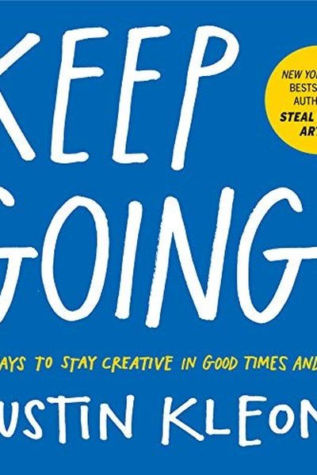

Library › Creativity
Keep Going — Summary & Key Lessons

10 ways to stay creative in good times and bad — the survival manual for makers, from the author of Steal Like an Artist.
📖 OPEN THE FULL INTERACTIVE BREAKDOWN →🌐 Read it in Hindi, Hinglish, Gujarati, Tamil & 22 more languages — free, with audio.
💡 The Big Idea
Austin Kleon (Steal Like an Artist, Show Your Work!) wrote this as a survival guide for the long haul of creative work — for the days when motivation dies, the world is loud, and your work seems pointless. His 10 rules are stubbornly practical: build a daily routine, protect your workspace, do the verb not the noun, make gifts, keep your standards but ship anyway. Creativity, he insists, is not a sprint or even a career — it is a daily practice you sustain for decades.
🧠 The 5 Key Lessons
Lesson 1: Your Days Are Your Life
Everyday
Kleon's bluntest reminder: your days are your life. Big creative dreams happen in ordinary days — so the quality of your days is the quality of your career. The key is a simple, repeatable routine: a regular time and place to work, small daily rituals, and a clear end to the workday. The routine carries you on days when the motivation doesn't.
📖 Example: Kleon describes his own lockdown-era practice: same morning walk, same desk, same notebook, same quitting time — the structure freed him to make books while the world was falling apart. Read the full example →
⚡ Do this: Design your ideal creative day in 6 lines: wake, walk, work block, lunch, work block, stop. Follow it for 7 days straight.
Lesson 2: Build a Bliss Station
Space
Your workspace is not a luxury — it is your creative cockpit. Kleon advises making a 'bliss station': a corner, desk or room with only the tools and art that feed your work, cleaned of distractions and other people's clutter. When you sit there, your body learns to switch into creative mode automatically.
📖 Example: Kleon's studio rules are famous: no phone, no email, only the current project's materials on the desk. Walking into that room, he says, is like entering a different mind. Read the full example →
⚡ Do this: This weekend, clean one surface and stock it with only your current project's tools and inspiring objects. Add one rule: no phone at the desk.
Lesson 3: Forget the Noun, Do the Verb
Identity
Calling yourself 'a writer' or 'an artist' creates a fragile identity that can be crushed by one bad day. Instead, Kleon says, focus on the verb: write, draw, code, sing. The verb is the thing you can do every day; the noun is just a label the world may or may not give you. Do the verb and the noun follows — or doesn't matter.
📖 Example: Kleon quotes a graffiti artist's advice: 'Writing is the thing that makes you a writer, not being published.' People who 'become' writers by publishing one book often stop; people who write daily are writers whether or not anyone's watching. Read the full example →
⚡ Do this: Rewrite your self-description as a verb: 'I am someone who ___s daily.' Then do it today, and say the verb version to yourself.
Lesson 4: Make Gifts
Giving
The most sustainable creative fuel is generosity: make things for specific people you care about. Gifts bypass the anxiety of audience and applause — you're not performing, you're giving. This also quietly builds your real audience: people share gifts, and gifts compound into relationships.
📖 Example: Kleon's daily newspaper blackout poems began as a gift for a friend's birthday; Steal Like an Artist began as a handout for his students. Both became international bestsellers — gifts first, products later. Read the full example →
⚡ Do this: Make one small piece this week for a specific person — a poem, a playlist, a drawing, a page. Give it with no strings.
Lesson 5: Keep Going: The Work Is a Marathon
Persistence
Every creative hits the wall: the project that won't cooperate, the career that stalls, the world that gets louder. Kleon's answer is stubbornness with joy: lower the stakes, shrink the goal, return to the routine, and keep the long game in view. The artists who matter are rarely the most talented — they are the ones who outlast the rest.
📖 Example: Kleon shares the story of the 100-year-old Japanese potter who said his secret was simply 'keep doing it.' The Beatles played 10,000 hours in Hamburg before anyone knew their names — the early years no one saw were the ones that made them. Read the full example →
⚡ Do this: Write your 10-year creative sentence: 'In 10 years, I want to have ___ (made, published, mastered).' Print it above your desk. Return to it on every bad day.
✅ 5-Step Action Plan
- Write your 6-line ideal creative day and follow it for a week.
- Build a bliss station — clean surface, tools only, phone outside.
- Switch your identity to a verb: 'I write,' not 'I am a writer.'
- Make one gift for a specific person this week.
- Print your 10-year sentence and put it where you work.
⚠️ When This Doesn't Work
Kleon's 'keep going, make your art daily' is the gentlest creativity book ever — and Google Stadia is the corporate version of the warning: Google kept going on cloud gaming for years — pouring engineering genius into the idea, iterating, believing — and the market simply never showed up, until the $3 billion experiment was unplugged. Keeping going is a creative virtue and a business vice when the evidence says stop. Kleon's book is for artists who must persist; companies must persist only as long as the evidence keeps paying rent.
💀 The Graveyard Proves It
🎮 Google Stadia — The $Millions Cloud-Gaming Bet Google Killed in 3 Years. Burn: Billions invested; refunds issued, platform shut down. Read the full case study →
💬 Best Quotes from Keep Going
- “Your days are your life.”
- “Forget the noun, do the verb.”
- “Creative work is not a selfish act or a bid for attention — it's a gift to the world.”
Interactive version: mark lessons as read, listen in your language, share quote cards.